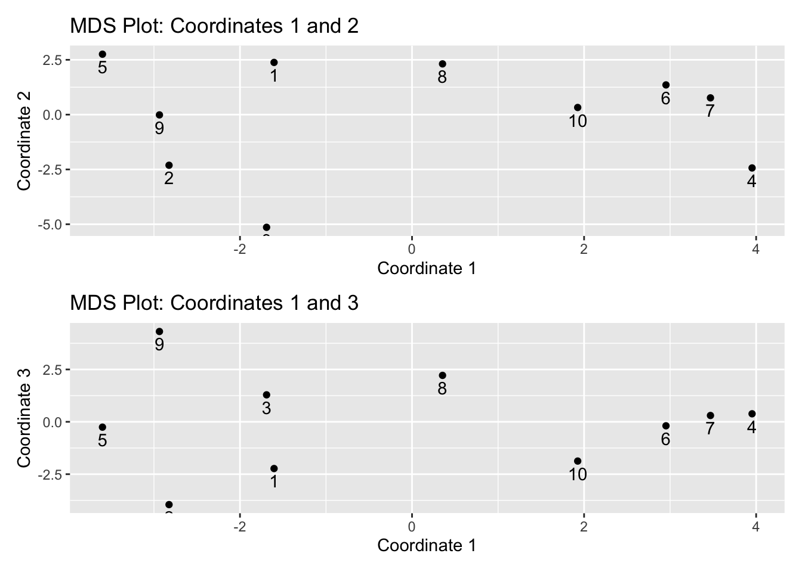

# Motivating Example: Airline Distances
## Corrected airline distances (ATL–SEA = 2180)
cities <- c("ATL","ORD","DEN","HOU","LAX","MIA","JFK","SFO","SEA","IAD")
D <- matrix(c(
0,587,1212,701,1936,604,748,2139,2180,543,
587,0,920,940,1745,1188,713,1858,1737,597,
1212,929,0,879,831,1726,1631,949,1021,1494,
701,940,879,0,1374,968,1420,1645,1891,1220,
1936,1745,831,1374,0,2339,2451,347,959,2300,
604,1188,1726,968,2339,0,1092,2594,2734,923,
748,713,1631,1420,2451,1092,0,2571,2408,205,
2139,1858,949,1645,347,2594,2571,0,678,2442,
2180,1737,1021,1891,959,2734,2408,678,0,2329,
543,597,1494,1220,2300,923,205,2442,2329,0
), nrow=10, byrow=TRUE, dimnames=list(cities, cities))8 Multidimensional Scaling
8.1 Learning Goals
By the end of this lecture, you will be able to:
- Explain the goal of MDS: producing a low-dimensional configuration that preserves proximities (similarities/dissimilarities).
- Derive classical MDS (cMDS) from a distance matrix via double-centering and eigen decomposition.
- Select the embedding dimension using simple criteria.
- Apply non-metric MDS (nmMDS) when the proximities are ordinal and not strictly Euclidean.
- Diagnose fit with Shepard diagrams and stress.
8.2 Motivation
We often observe a proximity (similarity or dissimilarity) between pairs of items and want a geometric picture. Examples include:
- Distances along networks (e.g., airline route mileage),
- Sensory judgments among products,
- Voting similarity/dissimilarity among legislators.

Interpretation: The 2D configuration arranges cities roughly like the U.S. map: West Coast (SFO, LAX, SEA) on one side, East Coast (JFK, IAD, MIA) on the other, with DEN/ORD more central and HOU/ATL in the south. That’s the intuitive power of MDS: a big, unreadable distance table becomes a meaningful picture.
Note: While the cities are roughly configured like the U.S. map, the exact geometry is still distorted.
8.3 Multidimensional Scaling (MDS)
MDS is a collection of different algorithms, designed to arrive at optimal low-dimensional (usually 2 or 3 dimensions) representation of the data, whose inter-point distances (or dissimilarities) are as close as possible to that in the original space.
Given a n\times p data matrix {Y}=[\mathbf{y}_1, \mathbf{y}_2, \ldots, \mathbf{y}_n]'. (This is often not required for MDS!)
Let D=(d_{ij})_{i,j=1,\ldots, p} denote a p\times p distance matrix (for {Y}).
MDS aims to find m\, (< p) and a set of m-dimensional points \mathbf{x}_1, \ldots, \mathbf{x}_n in the Euclidean space \mathbb{R}^m such that \begin{align*} \|\mathbf{x}_i - \mathbf{x}_j \|_2 \approx d_{ij} \text{ as close as possible}. \end{align*}
MDS returns coordinates {\mathbf{x}_1,\ldots,\mathbf{x}_n} in \mathbb{R}^m so that the Euclidean distances |\mathbf{x}_i-\mathbf{x}_j| reflect the given proximities as closely as possible (larger dissimilarity \Rightarrow farther apart).
Two main kinds of MDS methods/algorithms will be introduced:
- Metric MDS (including the classical MDS as a special case)
- Non-metric MDS
8.3.1 How to Construct to Distance/Proximity Matrix D
The foundation of MDS is a proximity matrix, also known as a similarity or dissimilarity matrix, for pairs of individuals. This is an n\times n symmetric matrix D=(d_{ij}) with elements d_{ij} that is calculated based on the data. Sometime, D is directly given by the applications, then there is no need to access the original data. In general, a smaller proximity measure indicates more similar individuals
- Two common choices of metric distances:
- Euclidean distance: \|\mathbf{x}_i - \mathbf{x}_j\|_2
- L_1 distance (also called the Manhanttan or taxicab metric): \|\mathbf{x}_i - \mathbf{x}_j\|_1
- Common non-metric distances: rank order
8.3.2 MDS in R
For classical MDS, one can use the function cmdscale from the stats package in R.
fit = cmdscale(d=D, k=2, eig=TRUE)
print(fit)$points
[,1] [,2]
ATL -718.1542 141.81292
ORD -382.4282 -340.63839
DEN 481.8355 -23.90197
HOU -161.5062 572.84413
LAX 1203.7381 389.77983
MIA -1133.6017 582.24559
JFK -1072.3608 -518.86708
SFO 1420.5980 112.16849
SEA 1341.3548 -579.88076
IAD -979.7349 -335.31213
$eig
[1] 9581454.2358 1686306.1047 9002.2384 3772.7630 1232.1055
[6] -154.5591 -565.5305 -2442.6892 -6312.9188 -35087.7998
$x
NULL
$ac
[1] 0
$GOF
[1] 0.9948288 0.9987584- The output
pointsgives the n\times k matrix up tokcolumns whose rows give the coordinates of the points. - The output
eiggives the eigenvalues. This can be used to check if there are any negative eigenvalues.
For non-metric MDS, one can use the isoMDS function from the MASS package in R.
fit.nm = MASS::isoMDS(d=D,k=2)initial value 0.081659
final value 0.000000
convergedprint(fit.nm)$points
[,1] [,2]
ATL -718.1568 141.81554
ORD -387.0692 -342.33775
DEN 486.4772 -22.20143
HOU -157.8946 572.80790
LAX 1204.2542 386.20238
MIA -1136.4073 577.40859
JFK -1072.3706 -518.87122
SFO 1420.6109 112.16973
SEA 1340.8556 -576.30457
IAD -980.5591 -330.43855
$stress
[1] 7.607855e-14- The output
pointsgives the matrix n\times k X with the number of columns specified byk=2. stressis used for diagnostics of the fit that will be introduced later.
8.4 The Mathematical Framework
8.4.1 Metric MDS
Assume we have constructed an n\times n dissimilarity matrix D=(d_{ij}) among n objects. This matrix may be constructed using Euclidean distance or taxicab metric or rank order. The goal is to find an n\times m matrix of coordinates {X}=(x_{ij}), where m<n, such that the distances between the rows of X match the original distances as closely as possible. This problem is mathematically equivalent to saying that for all i,j=1,\ldots, n, \begin{align*} \nonumber d_{ij}^2 & = \| \mathbf{x}_i - \mathbf{x}_j\|_2^2 = \sum_{k=1}^m (x_{ik}-x_{jk})^2 \\ \nonumber & = (\mathbf{x}_i - \mathbf{x}_j)^\top (\mathbf{x}_i - \mathbf{x}_j) \\ & = \mathbf{x}_i^\top \mathbf{x}_i + \mathbf{x}_j^\top \mathbf{x}_j - 2 \mathbf{x}_{i}^\top \mathbf{x}_j . \end{align*}
- Given d_{ij}^2, we need to solve for \mathbf{x}_1, \ldots, \mathbf{x}_m.
- It can be shown that the matrix B={X} {X}^\top can be expressed in terms of d_{ij}^2: \begin{align*}
b_{ij} = - \frac{1}{2} \left( d_{ij}^2 - \frac{1}{n} \sum_{j=1}^n d_{ij}^2 - \frac{1}{n} \sum_{i=1}^n d_{ij}^2 + \frac{1}{n^2} \sum_{i=1}^n \sum_{j=1}^n d_{ij}^2 \right)
\end{align*}
- If d_{ij} is not based on Euclidean distance, some of the eigenvalues of B may be negative.
- We the obtain the spectral decomposition B=V \Lambda V^\top, where \Lambda=\text{diag}(\lambda_1, \ldots, \lambda_n) with \lambda_1\geq \ldots \geq \lambda_n.
- Keeping the first m eigenvalues and eigenvectors yields the rank m approximation for B with X given by \begin{align*} X_m = V_m \Lambda^{1/2} \end{align*} where the rows of X_m are the desired m-dimensional coordinates (unique up to rigid motions).
Mathematical Details
- Suppose that \mathbf{X} is centered, i.e., \sum_{i=1}^n x_{ik} = 0 for all k=1,\ldots, m. If not, we can compute the centering matrix X_c: = X - \mathbf{1}_n \bar{\mathbf{x}}^\top.
- Inter-product matrix of \mathbf{X} is B:=\mathbf{X} \mathbf{X} with b_{ij} as the (i,j)-th element.
- Then the squared distance d_{ij}^2 can be expressed as \begin{align*} d_{ij}^2 = b_{ii} + b_{jj} - 2 b_{ij} \end{align*}
- To solve for b_{ij} from d_{ij}^2, we use the double centering transformation:
- Sum over j: Summing the equation d_{ij}=b_{ii}+b_{jj}-2b_{ij} over all j=1,\ldots, n gives \begin{align*} \sum_{j=1}^n d_{ij} &= \sum_{j=1}^n (b_{ii}+b_{jj}-2b_{ij}) \\ & = n b_{ii} + \sum_{j=1}^n b_{jj} -2\sum_{j=1}^n b_{ij} \\ &= n b_{ii} + \sum_{j=1}^n b_{jj} \end{align*} where \sum_{j=1}^n b_{ij} = 0 because the rows of X are centered.
- Sum over i: Similarly, summing over i=1,\ldots, n gives \begin{align*} \sum_{i=1}^n d_{ij}^2 = \sum_{j=1}^n (b_{ii}+b_{jj}-2b_{ij}) = \sum_{i=1}^n b_{ii} + n b_{jj}. \end{align*}
- Sum over both i,j: \begin{align*} \sum_{i=1}^n \sum_{j=1}^n d_{ij}^2 &= \sum_{i=1}^n \sum_{j=1}^n (b_{ii}+b_{jj}-2b_{ij}) \\ & = \sum_{i=1}^n n b_{ii} + \sum_{j=1}^n n b_{jj} - 2 \sum_{i=1}^n \sum_{j=1}^n b_{ij} \\ &= 2n \sum_{i=1}^n b_{ii}. \end{align*}
- Solving for b_{ij} based on the above equations gives \begin{align*} b_{ij} = - \frac{1}{2} \left( d_{ij}^2 - \frac{1}{n} \sum_{j=1}^n d_{ij}^2 - \frac{1}{n} \sum_{i=1}^n d_{ij}^2 + \frac{1}{n^2} \sum_{i=1}^n \sum_{j=1}^n d_{ij}^2 \right) \end{align*}
8.4.2 Non-metric MDS
When the proximity matrix is not a matrix of Euclidean distances, or when subjects can only make ordinal comparisons (e.g., one food is more salty than another), non-metric scaling is more appropriate. It is based on the rank ordering of the data, not their quantitative values.
The goal is to minimize a “stress” criterion, which increases when the distances in the visual display disagree with the rank order of the original dissimilarities.
Stress Criterion: A common stress formula is Kruskal’s Stress: \begin{equation} Stress = \sqrt{\frac{\sum_{i<j}(d_{ij} - \hat{d}_{ij})^2}{\sum_{i<j}\hat{d}_{ij}^2}} \end{equation} Here, d_{ij} is the distance between points i and j in the low-dimensional space, and \hat{d}_{ij} is the “disparity,” a monotonic transformation of the original dissimilarities \delta_{ij}.
8.5 Choosing the Embedding Dimension
Two simple cumulative fit measures are: \begin{equation*} P_m = \frac{\sum_{k=1}^m |\lambda_k|}{\sum_{k=1}^n |\lambda_k|}, \qquad P_m = \frac{\sum_{k=1}^m \lambda_k^2}{\sum_{k=1}^n \lambda_k^2}. \end{equation*}
- Values of P_m near 0.8 or above suggest a reasonable fit.
- If B has a considerable number of large negative eigenvalues, the MDS method described above should not be used, and non-metric scaling should be considered.
8.6 Illustrative Examples
8.6.1 Example 1: Classical MDS
Let’s apply classical MDS to a dataset with 10 individuals and 5 variables to find a low-dimensional representation. We’ll follow the process of creating a proximity matrix and then applying cmdscale().
R Code: cMDS fit
mdsex1 = data.frame(
y1=c(3,5,6,1,4,2,0,0,7,2),
y2=c(4,1,2,1,7,2,4,6,6,1),
y3=c(4,1,0,1,3,5,1,4,5,4),
y4=c(6,7,2,0,6,1,1,3,1,3),
y5=c(1,3,6,3,2,0,1,5,4,1)
)
D = dist(mdsex1)
fit = cmdscale(D, k = 9, eig = TRUE)
print(fit)$points
[,1] [,2] [,3] [,4] [,5] [,6]
[1,] -1.6038325 2.38060903 -2.2301092 -0.3656856 0.11536476 4.351965e-08
[2,] -2.8246377 -2.30937202 -3.9523782 0.3419185 0.33169405 -2.557375e-08
[3,] -1.6908272 -5.13970089 1.2880306 0.6503227 -0.05133897 -6.960090e-09
[4,] 3.9527719 -2.43233961 0.3833746 0.6863995 -0.03460933 1.009080e-08
[5,] -3.5984894 2.75538195 -0.2551393 1.0783741 -1.26125237 -2.744782e-08
[6,] 2.9520356 1.35475175 -0.1899027 -2.8211220 0.12385813 -4.832234e-08
[7,] 3.4689928 0.76411068 0.3016531 1.6369166 -1.94209512 5.971916e-10
[8,] 0.3545235 2.31408566 2.2161772 2.9240116 2.00450379 -1.576644e-08
[9,] -2.9362323 -0.01279597 4.3117385 -2.5122743 -0.18911558 9.029253e-09
[10,] 1.9256952 0.32526941 -1.8734445 -1.6188611 0.90299062 1.028991e-08
[,7] [,8]
[1,] 0.000000e+00 0.000000e+00
[2,] 1.163587e-08 1.006996e-08
[3,] -1.536081e-08 1.503930e-08
[4,] 4.840756e-08 -9.655816e-09
[5,] 2.724436e-08 7.565465e-09
[6,] -5.008021e-09 -5.276947e-09
[7,] -1.209471e-08 2.745223e-08
[8,] 1.665413e-09 1.234948e-08
[9,] 1.631006e-08 1.627690e-08
[10,] 9.154666e-09 4.311431e-08
$eig
[1] 7.518716e+01 5.880560e+01 4.960516e+01 3.042789e+01 1.037419e+01
[6] 6.223022e-15 3.980857e-15 3.535818e-15 -6.959170e-15 -1.030354e-14
$x
NULL
$ac
[1] 0
$GOF
[1] 1 1R Code: Check Distances
c(max(abs(D - dist(cmdscale(D,k=2)))),
max(abs(D - dist(cmdscale(D,k=5)))),
max(abs(D - dist(cmdscale(D,k=9))))
)[1] 6.756099e+00 1.598721e-14 1.598721e-14R Code: Compute PM Critera
eig <- fit$eig
pm1 <- cumsum(abs(eig)) / sum(abs(eig))
pm2 <- cumsum(eig^2) / sum(eig^2)
data.frame(m = seq_along(eig), PM1 = pm1, PM2 = pm2)[1:10, ]R Code: Visualization
df.X = as_tibble(
fit$points[, 1:3, drop = FALSE],
.name_repair = "unique"
)
colnames(df.X) = c("Dim1", "Dim2", "Dim3")
df.X$label = rownames(mdsex1)
g1 = ggplot(df.X,
aes(x = Dim1,
y = Dim2,
label = label)) +
geom_point() +
geom_text(vjust = 1.5, hjust = 0.5) +
labs(
title = "MDS Plot: Coordinates 1 and 2",
x = "Coordinate 1",
y = "Coordinate 2"
)
g2 = ggplot(df.X,
aes(x = Dim1,
y = Dim3,
label = label)) +
geom_point() +
geom_text(vjust = 1.5, hjust = 0.5) +
labs(
title = "MDS Plot: Coordinates 1 and 3",
x = "Coordinate 1",
y = "Coordinate 3"
)
patchwork::wrap_plots(g1,g2, ncol=1)
8.6.2 Example 2: House voting (dissimilarities)
Let’s analyze the voting dissimilarities of 15 U.S. congressmen from New Jersey on 19 environmental bills using non-metric MDS. The dissimilarity matrix is based on the number of times they voted differently. Higher value means more dissimilarity. We’ll apply MASS::isoMDS, then draw a Shepard diagram to assess monotonic fit.
R Code: House Voting Data
repnames <- c("Hunt(R)","Sandman(R)","Howard(D)",
"Thompson(D)","Freylinghuysen(R)",
"Forsythe(R)","Widnall(R)","Roe(D)",
"Heltoski(D)","Rodino(D)",
"Minish(D)","Rinaldo(R)","Maraziti(R)",
"Daniels(D)","Patten(D)")
repvote <- matrix(c(
0, 8,15,15,10, 9, 7,15,16,14,15,16, 7,11,13,
8, 0,17,12,13,13,12,16,17,15,16,17,13,12,16,
15,17, 0, 9,16,12,15, 5, 5, 6, 5, 4,11,10, 7,
15,12, 9, 0,14,12,13,10, 8, 8, 8, 6,15,10, 7,
10,13,16,14, 0, 8, 9,13,14,12,12,12,10,11,11,
9,13,12,12, 8, 0, 7,12,11,10, 9,10, 6, 6,10,
7,12,15,13, 9, 7, 0,17,16,15,14,15,10,11,13,
15,16, 5,10,13,12,17, 0, 4, 5, 5, 3,12, 7, 6,
16,17, 5, 8,14,11,16, 4, 0, 3, 2, 1,13, 7, 5,
14,15, 6, 8,12,10,15, 5, 3, 0, 1, 2,11, 4, 6,
15,16, 5, 8,12, 9,14, 5, 2, 1, 0, 1,12, 5, 5,
16,17, 4, 6,12,10,15, 3, 1, 2, 1, 0,12, 6, 4,
7,13,11,15,10, 6,10,12,13,11,12,12, 0, 9,13,
11,12,10,10,11, 6,11, 7, 7, 4, 5, 6, 9, 0, 9,
13,16, 7, 7,11,10,13, 6, 5, 6, 5, 4,13, 9, 0
), nrow=15, byrow=TRUE, dimnames=list(repnames, repnames))
D <- as.dist(repvote)R Code: Non-metric MDS
library(MASS)
nm <- isoMDS(D) # 2D by defaultinitial value 15.268246
iter 5 value 10.264075
final value 9.879047
convergedR Code: Non-metric MDS
head(nm$points) [,1] [,2]
Hunt(R) -8.435401 0.906338
Sandman(R) -7.405025 7.877023
Howard(D) 6.093016 -1.497199
Thompson(D) 3.518702 5.248689
Freylinghuysen(R) -7.245742 -4.182170
Forsythe(R) -3.278710 -2.568967R Code: Check Stress
nm$stress[1] 9.879047Interpretation: The final stress value is above 8 indicates a moderately good representation, which is also supported by the Shepard diagram.
R Code: Visualization
df.nm = as_tibble(nm$points,
.name_repair ="unique")
colnames(df.nm) = c("Dim1", "Dim2")
df.nm$id = rownames(nm$points)
# Extract party from the congressman names
df.nm = df.nm %>%
mutate(party =
str_extract(id, "\\(R\\)|\\(D\\)")) %>%
mutate(party = str_remove_all(party, "[()]")
)
ggplot(df.nm,
aes(x = Dim1, y = Dim2,
label = id, color = party)) +
geom_point(size = 3) +
geom_text(nudge_y = 0.5) +
labs(
title = "Non-metric MDS of Congressman Voting Records",
subtitle = "Separation by Party Affiliation",
x = "Dimension 1",
y = "Dimension 2"
) 
Interpretation: This plot reveals that the separation is mainly along party lines, with Democrats on the right side of the display. One Republican, Rinaldo, has a voting record similar to the Democrats on environmental issues. The Republicans exhibit more variation than the Democrats. The two congressmen with the most abstentions, Sandman (R) and Thompson (D), are both located in the upper portion of the display.
Shepard diagram: monotonic relationship between observed dissimilarities and fitted distances.
- Points close to the step-function indicate a good monotone fit; large vertical spreads indicate strain (stress).
R Code: Shepard diagram
sh <- MASS::Shepard(D, nm$points)
plot(sh, pch=".", xlab="Dissimilarity", ylab="Distance")
lines(sh$x, sh$yf, type="S")
8.7 Connections to PCA
If D comes from Euclidean distances among centered rows of a data matrix Y\in\mathbb{R}^{n\times q}, then cMDS on D is equivalent to PCA on YY^\top (up to scaling). In fact, with centered Y, \begin{equation*} d_{ij}^2 = |\mathbf{y}_i - \mathbf{y}_j|^2 = b_{ii} + b_{jj} - 2 b_{ij}, \end{equation*} where B=XX^\top and b_{ij} are its entries. Double-centering retrieves B (and thus PCA). This is why classical MDS is also called principal coordinates analysis.
8.8 Practical tips
- Centering: cMDS assumes centered coordinates (imposed by J). Translations/rotations/reflections of the final configuration are immaterial.
- Negative eigenvalues: Substantive negatives suggest non-Euclidean proximities; you can still plot using the largest positive eigenvalues, but interpret cautiously.
- Dimension choice: Use P_m’s or compare the recovered distance matrix with original distance matrix.
- Diagnostics: Always look at stress (nmMDS) and a Shepard diagram.